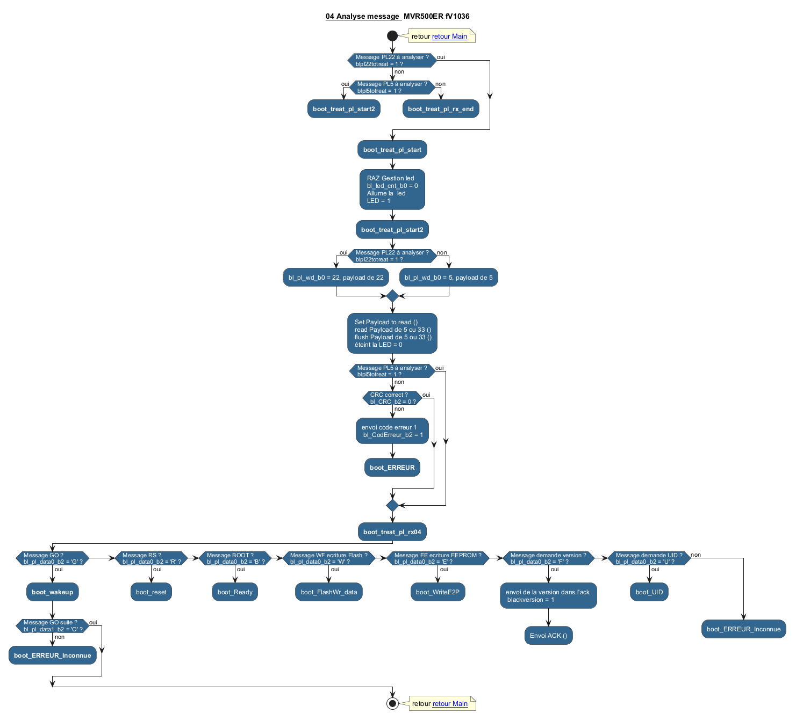

@startuml
skinparam useBetaStyle true
<style>
activity {
BackgroundColor #33668E
BorderColor #33668E
FontColor white
FontName arial
}
</style>
title __<b>04 Analyse message </b>__ MVR500ER fV1036
start
note right:retour [[BootMain.svg retour Main]]
if ( Message PL22 à analyser ? \n blpl22totreat = 1 ?) then (oui)
else (non)
if ( Message PL5 à analyser ? \n blpl5totreat = 1 ?) then (oui)
:**boot_treat_pl_start2**;
detach
else (non)
:**boot_treat_pl_rx_end**;
detach
endif
endif
:**boot_treat_pl_start**;
: RAZ Gestion led \n bl_led_cnt_b0 = 0 \n Allume la led \n LED = 1;
:**boot_treat_pl_start2**;
if ( Message PL22 à analyser ? \n blpl22totreat = 1 ?) then (oui)
:bl_pl_wd_b0 = 22, payload de 22;
else (non)
:bl_pl_wd_b0 = 5, payload de 5;
endif
: Set Payload to read ()\n read Payload de 5 ou 33 ()\n flush Payload de 5 ou 33 ()\n éteint la LED = 0;
if ( Message PL5 à analyser ? \n blpl5totreat = 1 ?) then (oui)
else (non)
if ( CRC correct ? \n bl_CRC_b2 = 0 ?) then (oui)
else (non)
:envoi code erreur 1\n bl_CodErreur_b2 = 1;
:**boot_ERREUR**;
detach
endif
endif
:**boot_treat_pl_rx04**;
if ( Message GO ? \n bl_pl_data0_b2 = 'G' ?) then (oui)
:**boot_wakeup**;
if ( Message GO suite ? \n bl_pl_data1_b2 = 'O' ?) then (oui)
else (non)
:**boot_ERREUR_Inconnue**;
detach
endif
detach
elseif ( Message RS ? \n bl_pl_data0_b2 = 'R' ?) then (oui)
:boot_reset;
detach
elseif ( Message BOOT ? \n bl_pl_data0_b2 = 'B' ?) then (oui)
:boot_Ready;
detach
elseif ( Message WF ecriture Flash ? \n bl_pl_data0_b2 = 'W' ?) then (oui)
:boot_FlashWr_data;
detach
elseif ( Message EE ecriture EEPROM ? \n bl_pl_data0_b2 = 'E' ?) then (oui)
:boot_WriteE2P;
detach
elseif ( Message demande version ? \n bl_pl_data0_b2 = 'F' ?) then (oui)
:envoi de la version dans l'ack \n blackversion = 1;
:Envoi ACK ();
detach
elseif ( Message demande UID ? \n bl_pl_data0_b2 = 'U' ?) then (oui)
:boot_UID;
detach
else (non)
:boot_ERREUR_Inconnue;
detach
endif
stop
note right:retour [[BootMain.svg retour Main]]
@enduml